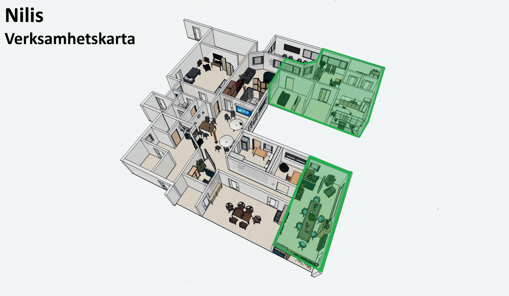

← Tillbaka till Nilis
Visa grupper
Vänd vy
Nilis daglig verksamhet. Här kan du utforska verksamheten genom att klicka på olika grupper i kartan. Välj en grupp för att läsa mer om hur de arbetar, vilken teknik som används och vilka aktiviteter som finns.
